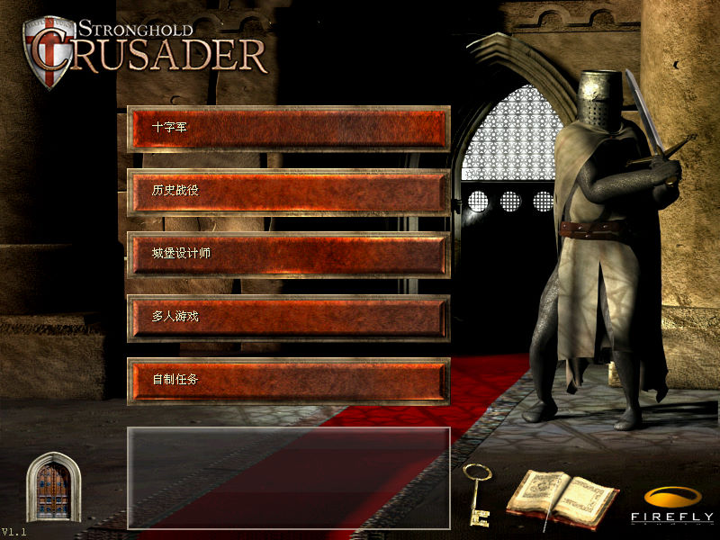
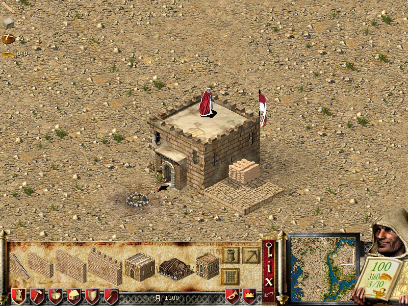
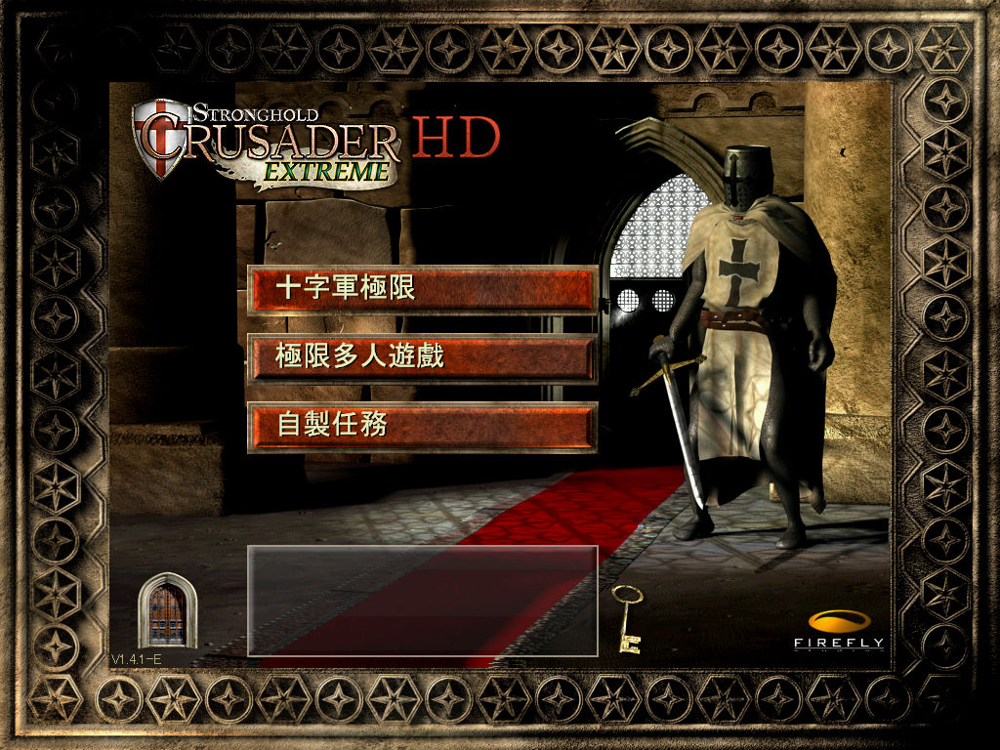
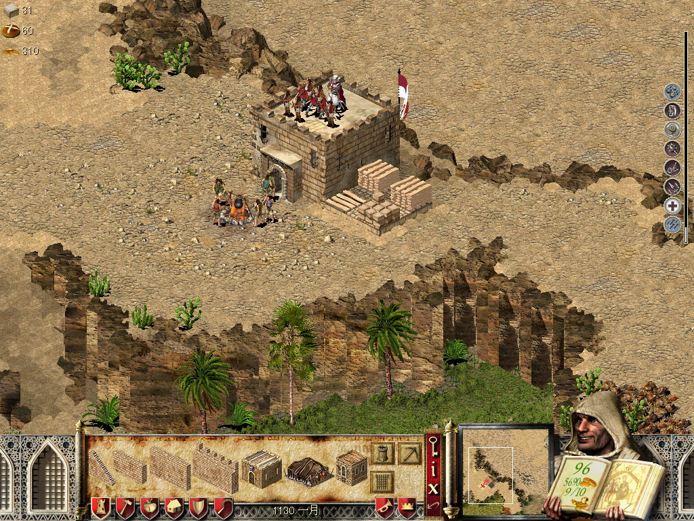

名稱：危城之戰／要塞／要塞攻防戰：十字軍東征／十字軍／鐵血軍戰士 (Stronghold: Crusader，繁中／簡中／英文版)
簡介：FireFly 2003年出品的即時戰略遊戲，由Rockstar代理發行，2003年由天人互動簡中
化並代理發行。2008年推出全新版本「極限版（Extreme）」，2012年再推出「高清版
（HD）」 [待補]。




保護：簡中版無保護
備註：簡中版為1.1版。
備註：簡中版請執行MX_Crusader.exe。
檔案：stronghold_crusader_extreme_hd_2.2.0.8.rar = 高清極限版GOG英文安裝檔
hd_cht.rar = 高清極限版繁化檔